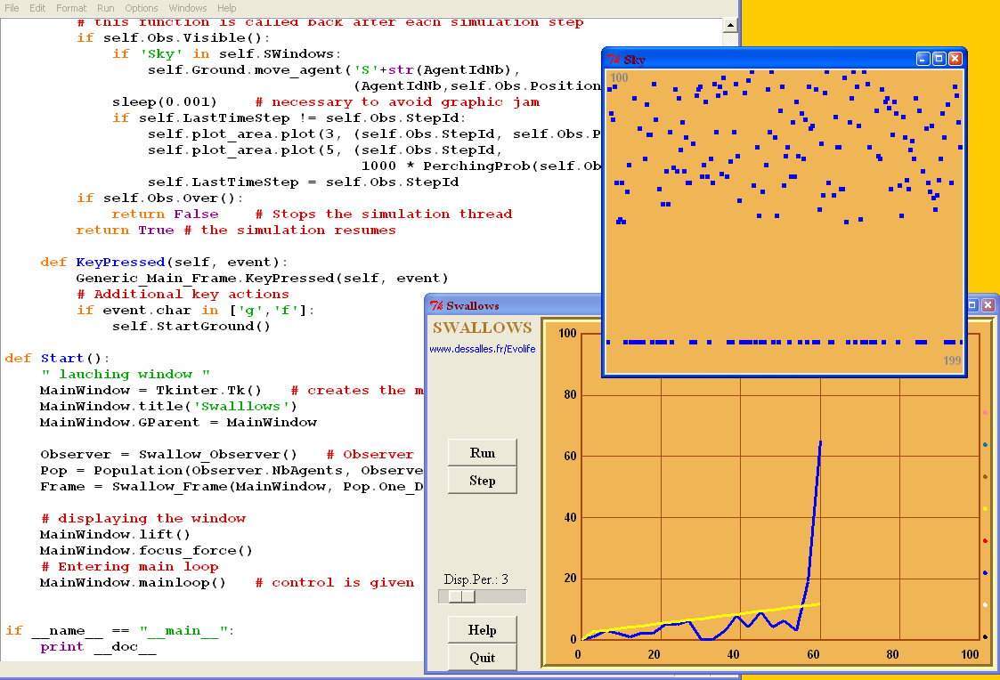

- Overall description
- How to execute Evolife (+ download)
- Evolife source files
- Evolife classes
- Evolife functions
- How Evolife works
- Create your own Evolife scenario
- Use Evolife’s components separately (graphics, ecology, genetic algorithm)
8. Use Evolife‘s components separately (graphics, ecology, genetic algorithm)
Some examples illustrating how to use some of Evolife‘s components are available in the directory Other. They include:
| Ants | moving ants foraging for food | animated graphics |
| CellularAutomaton | a basic implementation of 1-D C.A. | just drawing |
| Cocktail | the cocktail party effect | animated graphics |
| Segregationism | Thomas Schelling’s famous experiment | animated graphics |
| SegregationismGA | Thomas Schelling’s famous experiment | same + GA |
| Swallows | Collective decision | animated graphics |
| EcologyExample.py | Just a living population | ecology, no GA |
| GAExample.py | Evolife void scenario, waiting for being customized | GA |
| Trajectories.py | Simple example to show how Evolife‘s graphics can be used to display movement. | animated graphics |
| GraphicExample.py | More elaborate example to show how to use Evolife‘s graphics. | animated graphics |
To see how to use Evolife‘s graphic, look at Trajectories.py or GraphicExample.py in Other. The latter implements many of Evolife‘s graphic capabilities (including drawing, moving objects, curves, mouse clicks) together with comments.To see how to introduce a genetic algorithm in a non-GA application, look at the difference between Segregationism.py and SegregationismGA.py. The main difference is in the name of inherited classes. Note that reproduction significantly slows down execution.The six first examples in the above list can be executed in their respective directories by executing starter.
This is a snapshot of the Swallows.py program.

In all these example, you can see that the interface with Evolife‘s graphics is achieved using the function Start:Evolife.QtGraphics.Start(OneStep, MyObserver, Capabilities)
- OneStep is a function of yours that will be called repeatedly at each time step. OneStep should call MyObserver.season() to increment time step.
- MyObserver will provide data from your simulation (see below).
- Capabilities should be a string of letters taken from:
- C = Curves
- F = Field (2D seasonal display) (excludes R)
- G = Genome display
- L = Log Terminal (not implemented)
- N = Social network display (connectome)
- P = Photo (allows to take screenshots)
- R = Region (2D ongoing display) (excludes F)
Evolife.Ecology.Observer.ObserverYour MyObserver class may redefine the following functions :1. get_data(Slot). This function is called from Evolife_window.py. The main slots are:
- Positions. This slot is used to display agents on a 2-D field or region. In this case, get_data should return a list (or a tuple) containing tuples:
((Name1, Coord1), (Name2, Coord2). . .) or simply (Coord1, Coord2. . .).
The first format is required for animation: by resending new coordinates for (NameX), the corresponding object moves.
Coord is a tuple with up to 8 values (missing values are replaced by defaults):
Coord = (x, y, colour, size, ToX, ToY, ToColour, ToThickness).
The first four values define a ‘blob’, and the four last define an optional line drawn from the blob (see GraphicExample.py).
Colours are Evolife Colours or numbers between 1 and something like 45. When colour < 0, the agent is removed from display.
When using Field, get_data('Positions') should return all coordinates of all agents (missing agents will be removed from display).
When using Region, you need only to provide coordinates for agents that have changed location. Give a negative colour to remove an agent from display. - Network. This slot is used to display social links. get_data should return a list (or a tuple) containing tuples (Name, [(Friend1,Strength),...]), where Name defines an agent, Friend1 its best friend and Strength the intensity of the link (may be 0 if irrelevant).
- DNA. This slot is used to display the genomes of a whole group (one line per individual). get_data('DNA') should return a list (or tuple) containing tuples like (0,0,1,0,1...) that indicate the genome of one individual.
- Image. This slot is used to display images.
- ScenarioName. Should return a string.
- CurveNames. Should return a tuple or list of couples (Colour, CurveName) where Colour is a string (one of Evolife’s colours) or a number between 1 and something like 45, and CurveName is a string that provides semantics to the curve (but see below).
- WindowLegends. Should return a string which will be displayed in the "Legend" window. Useful to describe the content of windows (Field, Social Network, Trajectories)
- GenePattern. Should return a mask (0,0,0,0,0,1,1,1,1...) that provides gene boundaries. This pattern and all elements returned by get_data('DNA') should have the same length.
- Best. Should return the phenotype of the best individual. Typically a path (successive positions).
- Icon. Should returns the path to an icon for the windows of your application.
- EvolifeMainDir. Should return the path to your application.
- OutputDir. Should return the path to the location where results are to be stored.
- ResultFile. Should return the path to the file where curves are dumped.
- ResultHeader. First lines that should appear in curve dump.
- ResultOffset. Should return an integer indicating the number of lines to be ignored when computing statistics.
x is typically equal to MyObserver.StepId, which represent the current year.
StepId can be incremented by calling MyObserver.season().The preceding functions need only be implemented when the corresponding capabilities are indicated when calling Start.As an alternative to CurveNames, you may use the curve function:
self.curve() # resets curve definitions
self.curve(Name, Colour, Description) # defines a new curve
self.curve(Name) # returns the colour of an already defined functionColour is an Evolife Colour or a number. For instance, the slot GetPlotOrders may return something like:
def get_info(self, Slot):
if Slot == 'PlotOrders':
return [(self.curve('my curve'), (self.StepId, some_value))]
...